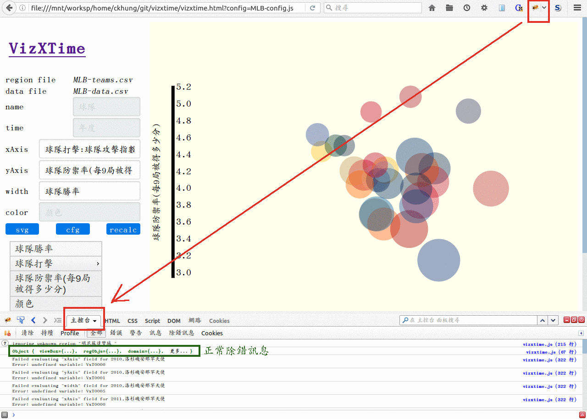

vizxtime
Viz 'cross Time is an online/offline scatter plot tool with an additional time axis. You feed it with two csv data files (for example, exported from LibreOffice calc or Microsoft excel), and specify (in a json format configuration file) which fields to use for the category names, x-axis, y-axis, width, color, and time axis, it then draws the scatter plot with a horizontal time scale so that you can drag the scale and see how your plot changes across time. See demo.

1. Preparing the Data
In order to use vizxtime, you need to prepare three text files.
In our example, these are the configuration file
config.json and two data files
regions.csv and data.csv .
We use curated open data released by the Taiwan government as our example. The data contains various statistics such as population, employment, budgets, etc. of all 22 counties of Taiwan from year 2003 to year 2015.
The "protagonists" on the scatter plot are big and small circles of various colors presenting the counties. These counties are referred to as "regions" in this document, in the configuration file, and in the source code. For a data set dealing with USA, for example, the regions might be states. For Canada, a region would be a province. And a region is a région in France :-) However, vizxtime is not limited to visualizing geographic data defined by political boundaries. If you are investigating the performance of various departments in your company, or health conditions of various ethnic groups on an island, then a "region" would be a department or an ethnic group in your case. "Categories" might have been a more generic name, but I feel it too abstract and less appealing to visual people, and therefore decided to keep it as "regions".
Each row of regions.csv
specifies the name of one region and the color
of the circle representing the region in the scatter plot.
It may contain additional fields that are independent of time
such as the region's size (area).
Each row of data.csv
specifies various statistics of one region at a particular time.
In other words, the [region, time] combination is the
primary key of this file. This is the main data file containing
various parameters that you suspect to have hidden relations.
For example, how do various kinds of pollutions correlate
with various indices of public health?
Each parameter will correspond to one column.
These two csv files can be located in the same directory as the downloaded vizxtime code. Or they can be located at some publicly accessible remote URL. Note: Firefox makes reading local data files easier. For chrome users, one need to do it from the command line. See javascriptCanReadLocalFiles for more details.
In any case you specify the locations and names of these two csv files
in the configuration file config.json.
Vizxtime will then load the two csv files
and "join" them on the region name field to produce the
complete data set that you can explore.
The field names can be ascii or utf-8 strings.
Extra spaces before or after each field name must be removed!
Moreover, the field names themselves must not contain
white spaces, certain math function names (such as sin,
cos, tan, sqrt, log)
or characters used in math expressions such as +, -, *, /, (, ).
In addition, they must not contain the substring of this format:
VxTnn (e.g. VxT0、
VxT25) where nn
are integers because internally field names
are converted into variable names of this format.
The colon character (":") within a field name has a special meaning. It signifies segments within the name that determines its grouping with other names. For example, "population:male" and "population:female" will be grouped together, so will "income:tax" and "income:fine". There can be several colons within a field name. Field names that share the same longer prefix segments will be grouped more tightly together in the menu. In this way, field names are organized into a tree according to their similarities, much like files in a file system are organized into a directory tree. (E.g., /var/log/apache2/access.log and /var/log/apache2/error.log are displayed close together in the full directory listing of / .)
2. The User Interface
Presently you can visualize three quantities simultaneously in the scatter plot -- the x- and y-coordinates of the center of the circle, plus the width (diameter) of the circle. If people request, the code might be changed to draw ellipses instead of circles, thus enabling a fourth quantity corresponding to the height of the ellipse.
In the simplest case, you just choose one
field name for each of the xAxis,
yAxis, and width input fields.
The field names can be typed in, or they can be
chosen from the menu below, which is created from
the field names of the joined table and organized
into a nested menu tree according to their names
(as segmented by the ":" character).
Then you press the "recalc" button to re-calculate the maximum and minimum values of various parameters and to re-draw the scatter plot. You can then drag the horizontal time scale. and VIualiZe how the chosen parameters in your data change 'cross TIME.
You can go one step further by creating mathematical
expressions out of one or more field names.
For example, the area of the circle is proportional to
the square of its radius/diameter.
Thus if you would like the area to represent the population
of a region, it makes more sense to use sqrt(population)
as its width than the simple population.
See
JavaScript Expression Evaluator for the list
of recognized math functions (and thus substring to be
avoided in field names).
There is an additional function ZaBin
that computes the normal approximation to the
binomial distribution, useful for example
in situations when one wants to emphasize
the deviation of the male/(male+female) ratio from 0.5 .
See the source code and
Normal Approximation to Binomial for more details.
Pressing the "reg" button next to the time scale brings up the region selector. You can then select just a small subset of the regions to display.
When you are satisfied with a scatter plot, you can press the "svg" button for saving the current plot, or press the "config" button for saving the current mathematical expressions for the three fields.
3. The Configuration File
The following values can be changed in the json-format configuration file:
filename.regionslocal file name or remote url for the time-independent "regions" file.filename.datalocal file name or remote url for the main data file, whose primary key is the [region, time] combination.dimExpr.regionthe name of the field (column) to be interpreted as the names for the circles.dimExpr.timethe name of the field (column) to be interpreted as the time axis.dimExpr.xAxisthe mathematical expression (composed of field names and built-in functions) for the horizontal position of the circles.dimExpr.yAxisthe mathematical expression (composed of field names and built-in functions) for the vertical position of the circles.dimExpr.widththe mathematical expression (composed of field names and built-in functions) for the diameter of the circles.dimExpr.colorthe name of the field (column) that define the colors of the circles.transitionthe time for the transition effect, in milliseconds.opacitythe opacity of the circles. 0 means completely transparent (invisible); 1 means completely obscures anything beneath it.width.minthe diameter of the smallest circle.width.maxthe diameter of the largest circle.
In addition, you may specify the name or the URL of the configuration file by appending the "?config=URL" query string to the URL of the vizxtime html page, like this or this. Thus you can play with several sets of data (each composing of one configuration file plus two csv files) with a single copy of the vizxtime code.
4. Error handling and debugging
- Entries with missing parameters are made transparent (and thus disappear).
- To see the inner workings of vizxtime,
you need to open the console.
In chrome, press ctrl-shift-i.
In firefox, install firebug and press F12 .
You can read warning messages about your data files
and/or examine the global variable
Gto understand the inner workings of the program.
